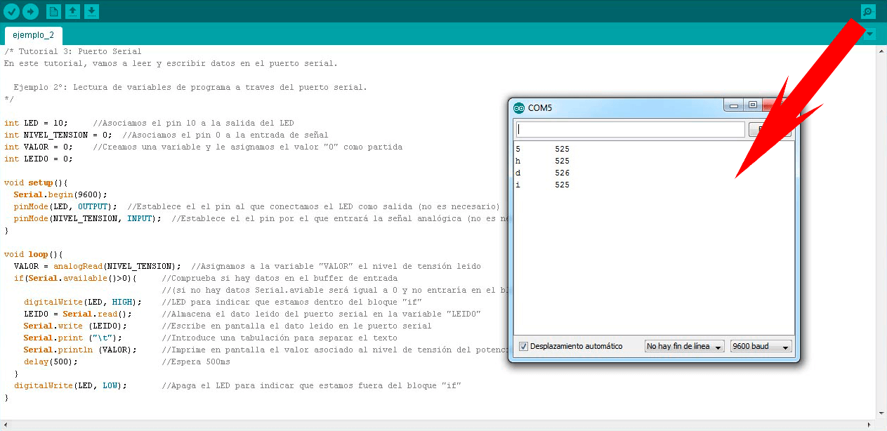
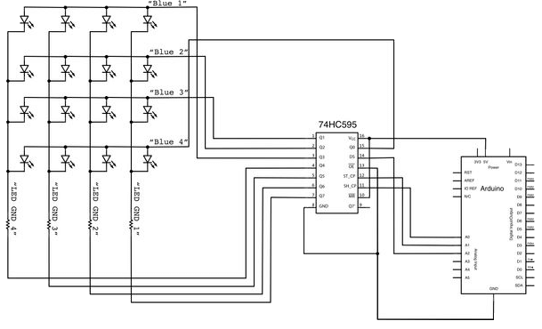

En este tema aprenderemos a controlar los LEDs desde el ordenador con el Monitor Serie del Arduino.

El monitor de serie es el "cable" entre el ordenador y el nuestra placa de Arduino. Permite enviar y recibir mensajes de texto, útiles para la depuración y también control de tu placa de Arduino. Por ejemplo, es posible enviar comandos desde el ordenador para encender LEDs.
(1) x Placa Arduino
(1) x Protoboard
(1) x Registro De Turnos 74HC595
(8) x LED
(1) x Resistencia de 100 Ohm
(x) x M M cables (cables de macho a macho)
El IDE de Arduino, posee una herramienta llamada "Monitor de Serie". Esta herramienta abrirá una consola con
la que podemos comunicarnos con Arduino, tanto para mandarle comandos como para recibir información. Esto es
muy útil para conocer el estado de las variables de programa y saber qué es lo que realmente está pasando
dentro de nuestro Arduino.
El puerto serie de la placa de Arduino utiliza los pines digitales 0(RX) y 1(TX). Estos están conectados al
controlador FTDI integrado en la placa, que es el que permite la traducción del formato serie TTL a USB.
Nota: Los pines 0 y 1 NO pueden ser utilizados para cualquier otro propósito mientras estamos utilizando la comunicación serie.
Para usar el puerto serie del Arduino hay varias funciones de programación que debemos de conocer. A
continuación os mostramos las más importantes:
· Serial.begin(velocidad): Activa la comunicación serie y establece la velocidad. La
velocidad de conexión (baudios o Baud Rate) es la velocidad que llegan los datos al puerto serie
(normalmente se usa 9600bps).
· Serial.available(): Devuelve el estado del buffer del puerto serie y nos dice si
hay datos dentro de este.
· Serial.read(): Lee un carácter del buffer (un solo byte).
· Serial.write(): Escribe tantos caracteres como quieras a través del puerto serie.
· Serial.print(): Imprime los datos al puerto serie como texto ASCII.
· Serial.println(): Imprime los datos al puerto serie como texto ASCII seguido de un
retorno de carro (ASCII 13, o ‘\r’) y un carácter de avance de línea (ASCII 10, o ‘\n’).
· Serial.flush(): Vacía el buffer de entrada de datos.
· Serial.end(): Desactiva la comunicación serie, para que los pines 0(RX) y 1 (TX)
puedan utilizarse como entradas o salidas digitales.
Nota: Para enviar y recibir datos, Arduino utiliza el código ASCII.
Para acceder al “Monitor de Serie”, una vez abierto el IDE de Arduino, nos tenemos que dirigir hacia "Programa / Monitor Serie" o mediante comandos abreviados teclear Ctrl+Mayús+M.


Una vez efectuado todo el cableado, descargaremos el script del siguiente enlace y lo cargaremos como hemos aprendido.
Con el ejemplo y aprovechando el ejemplo del tema 19 (Registro De Turnos 74HC595), vamos a ser capaces da
encender cualquiera de los 8 pines y apagarlos, cuando enviamos su posición a través del monitor serie. Si
el carácter enviado es del 0 al 7, encendemos el LED correspondiente y si lo que enviamos es “x” apagamos
todos los LEDs.
El mensaje "Introduce el LED que quieres encender o 'x' para apagar" ha sido enviado por la placa de Arduino.
Nos está diciendo qué números podemos enviar (donde 0 es el LED de la derecha, 1 es el siguiente, hasta 7
para el LED más a la izquierda) o la "x" para apagar todos los LEDs.
Tenemos que escribir los comandos en la parte inferior del Monitor de Serie y pinchar en "Enviar" o pulsar
"Enter" para enviar los comandos a la placa.
En la función "setup" tenemos estas nuevas líneas al final:
Serial.begin(9600);
while (!Serial);
{
Serial.println("Introduce el LED que quieres encender o 'x' para apagar");
}
En primer lugar, tenemos el comando "Serial.begin(9600)". Esto inicia la comunicación serie,
para que la placa de Arduino pueda enviar comandos a través de la conexión USB. El valor 9600 es la
configuración velocidad de la conexión. Esto es la rapidez con la que los datos debe ser enviados. Esto puede
cambiar a un valor más alto, pero también tendrás que cambiar al Monitor de Serie el mismo valor.
El comienzo de la siguiente línea con "while" asegura que hay algo en el otro extremo de la conexión USB
para que comience el envío de mensajes. De lo contrario, el mensaje puede ser enviado, pero no aparecerá.
Esta línea es realmente necesaria sólo si se utiliza la placa de Arduino "Leonardo" porque el resto se
restablece automáticamente la placa Arduino al abrir el Monitor de la serie.
La última líneas envía el mensaje al Monitor de Serie.
En la función "loop" es donde sucede toda la acción:
if (Serial.available())
{
}
Todo lo que ocurre dentro del bucle está contenido dentro de una instrucción "if", con lo que a menos que la
llamada a la función incorporada de Arduino "Serial.available()" sea "true" no sucederá nada.
"Serial.available()" devuelve "true" si los datos han sido enviado a la placa y allí están listos para ser
procesados. Los mensajes entrantes se llevan a cabo en lo que se llama un buffer y
"Serial.available()" devuelve "true" si ese buffer no está vacío.
Si el mensaje ha sido recibido, es cuando pasamos a la siguiente línea de código:
char ch = Serial.read();
Esta línea lee el siguiente carácter del buffer y lo elimina del buffer. También asigna el valor leido a la
variable "ch". La variable "ch" es de tipo "char" que significa "carácter" y como su nombre indica, puede
contener un único carácter.
if (ch >= '0' && ch <= '7')
La instrucción "if" en la línea siguiente comprueba si el dígito almacenado es un carácter entre 0 y 7.
Parece un poco extraño comparar caracteres de esta manera, pero es perfectamente aceptable.
Cada carácter está representado por un número único, conocido por su valor ASCII. Esto significa que cuando
se comparan caracteres usando <= y >= lo que se comparan realmente son sus valores ASCII.
Si pasa la comprobación, llegamos a la siguiente línea:
int led = ch - '0';
Ahora estamos aplicando aritmética a los caracteres. Estamos restando el dígito '0' de cualquier dígitos
haya sido introducido. Por lo tanto, si escribimos "0", "0"-"0" será igual a 0. Si escribimos "7", "7"-"0"
será igual al número 7 ya que es realmente los valores ASCII que se utilizan en la sustracción.
Una vez que sabemos qué número de LED queremos encender, nos basta establecer este bit en la variable "leds"
y actualizar el registro de desplazamiento. Esto, como ya vimos, lo haremos con:
bitSet(leds, led);
A partir de aquí, ya conocemos el significado de las siguientes líneas de código dentro del "if".
Después de la instrucción "if" que maneja cuando el caracter introducido es entre 0 y 7, la segunda
instrucción "if" comprueba si elcaracter es la letra "x".
if (ch == 'x')
Si es así, entonces se apagan todos los LEDs y se envía un mensaje de confirmación.
Ahora que ya sabemos la forma de encender los LEDs a través del monitor de serie, vamos apagarlos también de
uno en uno.
Indicaremos primero si queremos encender o apagar el LED con los carácteres "e" (encender) o "a" (apagar).
Posteriormente indicaremos el número del LED que queremos encender o apagar.